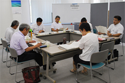

九都県市合同防災訓練の出展、災害対策書の改定について意見交換
7月20日（金）15時30分より、埼玉県生協連会議室にて、第1回災害対策委員会を開催し、5生協（コープみらい、パルシステム埼玉、生活クラブ生協、労済生協、コープデリ連合会）6人と事務局が出席しました。
【議題】

1．協議事項
（1）埼玉県生協連災害対策委員会委員長の理事会推薦について
（2）第39回九都県市合同防災訓練埼玉県会場
8月26日(日)・蓮田市
①7月10日全体会議報告
②防災フェアについて
- コープみらい
- 防災クイズ
- パルシステム埼玉
- 配布訓練→飲料500個
- 生活クラブ生協
- 配布訓練→菓子500個
- 医療生協さいたま
- 握力チェック
- 労済生協
- 配布訓練→防災てぬぐい200枚
- コープデリ連合会
- 埼玉県生協連
③緊急支援物資授受訓練・・・今年度はなし
＊8月に、参加者向けの詳細資料を配信します。
（3）埼玉県生協連地震等大規模災害対策書について
→備蓄品点検、今後各生協で活用できる施設等あるか集約
2．各生協からの報告（西日本豪雨災害関連/1月大雪被害関連/その他取り組み）
西日本豪雨災害関連では、各生協、募金のよびかけが始まっていること、岡山市へのボランティア派遣などについて、また、大雪災害などをうけて、BCP関連の見直しが進められていることなどが報告されました。
3．その他
（1）埼玉県主催災害ボランティア団体ネットワーク検討会議報告
（2）中央地連大規模災害対策協議会関連
（3）緊急通行車両関連
→会員生協から、改めて実態に即した改廃を行いたい旨、話がありました。
現状の会員生協ごとの一覧を県連から送り、精査していく。
（4）MCA無線訓練 次回日程 8月1日（水）
（5）次回日程
第2回 11月下旬～12月下旬予定